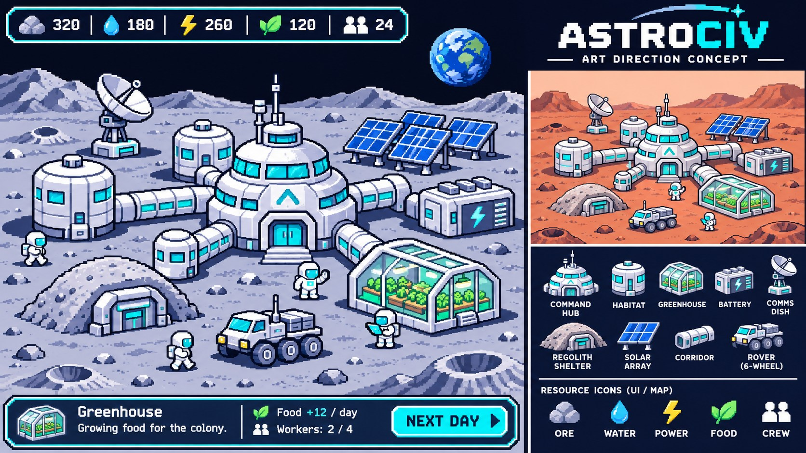

PlayAstroCivilization
About this game
A Unity space-engineering game for ages 7–12, built for the 2026 NASA Space Apps Challenge (Junior Astronaut Mission Trainer). The player builds a Moon outpost, balances power, air, water and food, keeps a fictional crew safe, and responds to a solar storm based on real NASA data.
- Strategic
- 2D Pixel
- Astronomy
- Educational